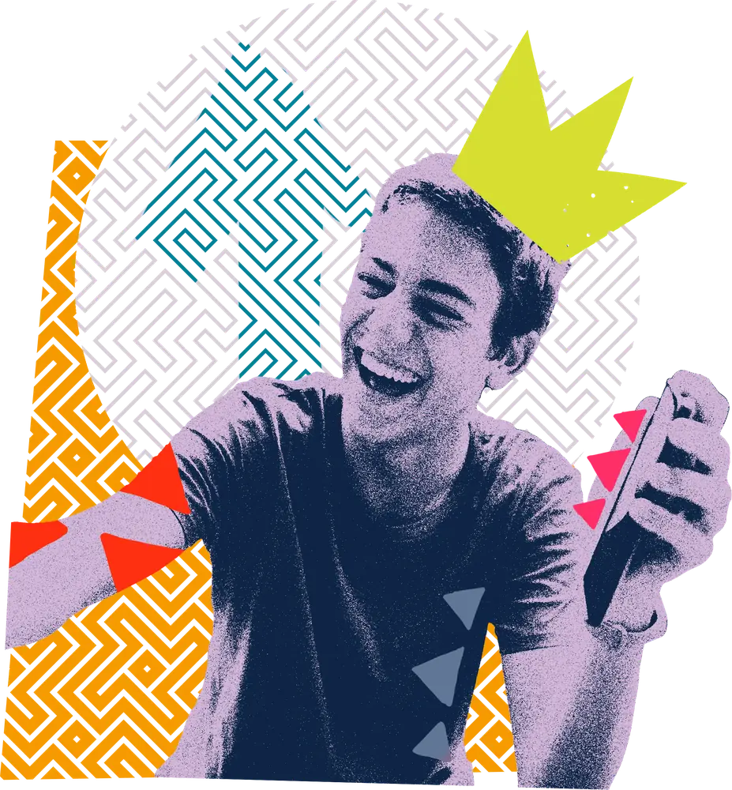
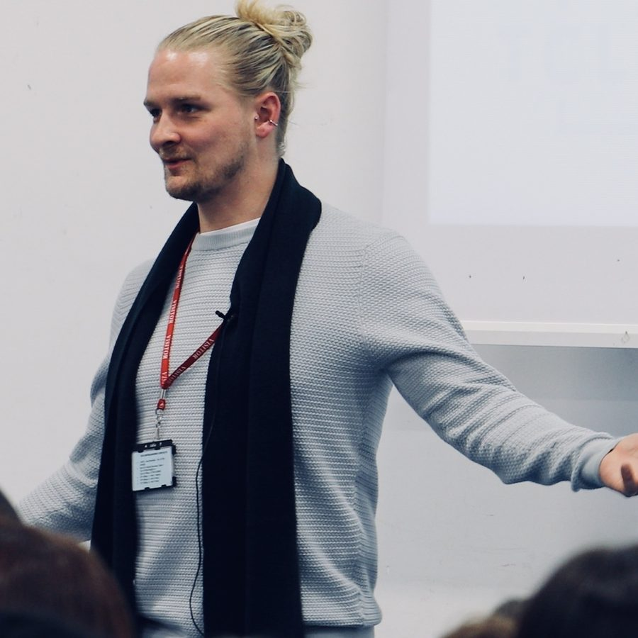
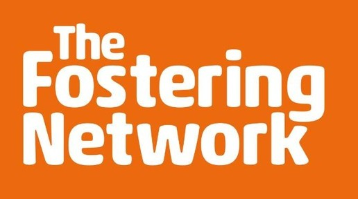
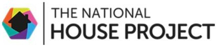
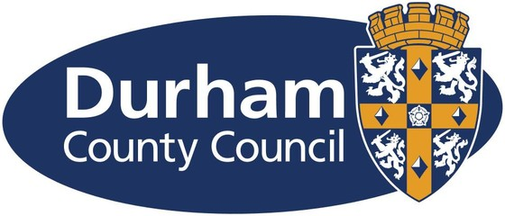
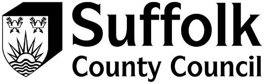
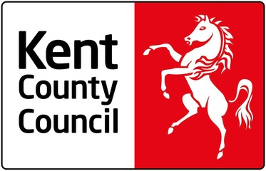

Children’s social care, changed by people who grew up in it.
Consultancy and training for councils, virtual schools and fostering services, co-designed with children in care, care leavers and the people who work with them.



What we do
Consultancy
Four areas of change
Transformation and service design, fostering, participation and co-production, and employment and pathways.
Programmes
Run over months
Leadership for designated teachers and care-experienced young people, employment for care leavers, and NVR across a whole service.
Training
Face to face and online
Trauma-informed courses for schools, social workers and foster carers, in the room or online when it suits your staff.
Keynotes
Luke Rodgers BEM at your event
Care-experienced keynote speaker for your conference, leadership event or staff day.
Fostering
With our partner Why Care
We help councils turn people who want to foster into confident carers who stay.
Entrepreneurial leadership
The Care Leaders Fellowship
12 months for anyone with an idea, project or business that solves problems for care-experienced people.

Who we are

A children’s social care consultancy that brings lived experience of care and professional leadership into the same room.
Since 2017 we’ve delivered 40 projects for 36 local authorities and national bodies, including the Department for Education. We work alongside children, care leavers and the staff who support them, so the people a service is designed for help shape the decisions about it, and every recommendation is backed by evidence.
Our founder, Luke Rodgers BEM, went into care at 10. He was awarded the British Empire Medal in the Queen’s 2018 honours, was a Knowledge Equity Fellow at Saïd Business School, University of Oxford, and leads the national engagement on England’s new fostering standards for the Department for Education. He has worked with councils across the country, from Durham and Middlesbrough to Suffolk, Kent and Buckinghamshire. He knows what it’s like to be on the receiving end of a service, and what it takes to change one.
From care leaver to care leader is the idea we were founded on. In 2026 that approach won Gold for Lived Experience at the iESE Public Sector Transformation Awards.
Not lived experience as a guest speaker slot. Lived experience as strategy.

What we’ve done

Suffolk County Council: The Family Business
From corporate parenting to community parenting. Over 60 people at the employer launch, and 40+ young people qualified through the Skills Academy.
Read the case study
Durham County Council: NVR in residential care
Non-violent resistance in 11 children’s homes. 120 residential staff trained.
Read the case study
Regional Care Cooperative, South East: Youth Participation Collective
A regional network of participation workers, and a Shadow Board of 18 Youth Ambassadors, named and branded by young people themselves.
Read the case study
Virtual School Kent: A Tool for Change
One child’s story, three cohorts, a county’s schools. Around 490 staff trained, and 124 of 125 said the first session met its objectives.
Read the case study
Darlington Virtual School: Designated Leaders
The training designated teachers designed for themselves. 8 designated teachers co-designed a 10-month programme.
Read the case study
The Care Leaders Summit 2026
A national day with care-experienced leaders at the front. 120 places, and 10 Fellows of The Care Leaders Fellowship on the guest list.
Read the case study
NHS Staffordshire and Stoke-on-Trent: Bridge and Beyond
One service for the children who fell between systems. A business case that secured £4 million, and more than 400 staff trained.
Read the case study
NAVSH: a national co-design with Virtual School Heads
Co-designing the future of the role with the people who do it. 135 responses from a national workshop and survey.
Read the case study
Liverpool Virtual School: Rising Futures
A conference young people helped build. 5 young people designed and ran their own workshop.
Read the case study
PwC: New World, New Skills
Opening the doors of a global firm to care leavers. 30 care leavers from four councils spent the day at PwC’s London office.
Read the case study
Buckinghamshire Council: Youth Voice Bucks
A participation service young people named, branded and shaped. 19 champions from 11 service areas.
Read the case study
Middlesbrough Council: Middlesbrough Children Matter
A vision built with young people, after special measures. 300 staff, young people and partners helped shape it.
Read the case study
What clients say
“I’ve seen the language change verbally and in recording, and I’ve only heard positive things from this training.”
Who we work with
Directors of children’s services, virtual school heads, heads of fostering and leaving care, designated teachers, and the national bodies that set the standards. 50 councils, national bodies and partners since 2017.




